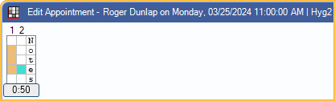
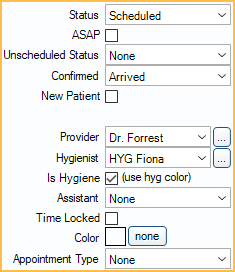

Edit Appointment
Create, edit, or update appointment details from the Edit Appointment window.
In the Appointments Module, with a patient selected, double-click on an open area to create a new Appointment.

Alternatively:
- In the Appointments Module, double-click an existing appointment to edit.
- In the Appointments Module, click Make Appt, Make Recall, or Fam Recall.
- In the Patient Appointments window, click Copy to Pinboard, Schedule Recall, Entire Family, or Create New Appt.
- In the Recall List, Unscheduled List, or Planned Appointment Tracker, double-click an appointment row.
- When using Web Sched, patients can schedule their own appointments online.
- Frequency Limitations are enabled, when scheduling a procedure affected by an insurance frequency limitation, users are warned if a frequency conflict is detected (e.g., if the procedure is scheduled too soon after a prior procedure).
- A warning appears when scheduling an appointment for a patient who is on the Unscheduled List. Users can continue to create the appointment or schedule the appointment on the Unscheduled List.
- To block out appointment times in Operatories, see Blockouts.
Title and Time Bar
Title Bar: Shows the patient name, appointment day, date, and time, and the scheduled Operatory.
Time Bar: Along the left side are color-coded Time Bars that indicate appointment length and provider time. The default appointment time is based on the procedure's time pattern. The total length of the appointment is displayed.
- To shorten or increase time, drag the slider up or down.
- The left column displays the primary treating provider color. When Is Hygiene is checked, this is the Hygienist color. When Is Hygiene is unchecked, this is the Provider (dentist) color.
- The middle column displays the secondary treating provider color. Click a box to assign secondary provider time. When Is Hygiene is checked, this is the Provider (dentist) color. When Is Hygiene is unchecked, this is the Hygienist color.
- Type into the right column to add any abbreviations to note on the appointment (e.g., assistant abbreviation, symbols to convey information). One character is allowed per increment (box). Note: Because of the way these letters are stored in the database, it is assumed that Appointment View time increments and rows per increment do not change.
- Customize the Width of provider time bar of each appointment in Preferences.
Patient Information and Appointment Fields

Patient Information: Shows basic patient and financial information. Fields displayed cannot be customized or edited.
- First Name, Last Name, Middle Initial, Birthdate, Phone Numbers, Credit Type, and Billing Type: Information pulled from Edit Patient Information.
- Total Balance: Current patient balance without insurance estimates or write-offs.
- Address and Phone Notes: Information pulled from Edit Patient Information.
- Family Balance: Current family balance after insurance estimates and write-offs. Also visible in Account Module.
- Est. Patient Portion: Patient portion for procedures attached to the appointment.
- Includes write-offs, insurance estimates, and treatment plan discounts. For completed appointments, insurance payments and adjustments attached to the procedure are also considered.
- For estimates to calculate correctly procedures must be charted from the Chart Module then attached to the appointment.
- If procedures are added directly to the appointment, click into the Treatment Plan Module to update estimates.
- Fee this Appt: Total fee for procedures attached to the appointment.
Appt Fields: A list of all Appointment Field Defs. Double-click on a field to enter patient information.
Appointment Settings
Status: The appointment's current status.
- Scheduled: The appointment is on the schedule, but not yet complete.
- Complete: The appointment is done and has been Set Complete.
- Unsched List: Sends an appointment to the Unscheduled List. The option is disabled if the appointment is accessed from the Unscheduled List and an appointment has not been scheduled.
- Broken: The appointment is on the schedule, but has been Broken.
ASAP: Lists the appointment on the ASAP List. This means the patients wants to come in sooner if an opening becomes available. ASAP can also be a set as a display option in Appointment Views.
Unscheduled Status: Used in the Unscheduled List, Recall List, and Planned Appointment Tracker to easily identify why an appointment has not been scheduled and determine whether to contact patient or not. Customize options in Definitions: Recall / Unsched Status.
Confirmed: The Confirmation Status. Confirmed statuses are also linked to Time Arrived, Time Seated, and Time Dismissed values (see below).
New Patient: Check to indicate new patient appointment. When checked, NP shows in the upper-left corner of the appointment box on the schedule.
- Can be manually unchecked at any time.
- Checks by default if there is no Date of First Visit entered in the Edit Patient Information: Other Tab, and there are no completed procedures for the patient.
Clinic: The patient's default clinic. Only visible when Clinics is turned on.
Provider: The dentist assigned to the appointment. Every appointment must have a dentist and can optionally have a hygienist.
- The default provider on an appointment is the provider (not marked secondary) Scheduled in the Operatory.
- If no provider is scheduled in the Operatory, the default provider is the provider assigned to the Operatory.
- If no provider is scheduled in or assigned to the Operatory, the default provider is the patient's assigned Primary Provider in Edit Patient Information.
- The provider can be manually changed if needed.
Hygienist: The hygienist assigned to the appointment.
- The default hygienist is the provider marked secondary (i.e., hygienist) scheduled in the Operatory.
- If no hygienist is scheduled to the Operatory, the hygienist assigned to the Operatory is used by default.
- If no hygienist is scheduled in or assigned to the Operatory, the patient's assigned Secondary Provider in Edit Patient Information is used by default.
- If the patient has no Secondary Provider assigned, and no hygienist is scheduled in or assigned to the Operatory, no hygienist is assigned by default.
- The hygienist is assigned as the provider on procedures marked Is Hygiene Procedure in Procedure Code Edit.
- To always assign the Operatory's hygienist to the appointment, even if it is none, enable Force op's hygiene provider as secondary provider in Preferences.
Is Hygiene: Mark the appointment as a hygiene appointment. The appointment uses the hygienist's color, unless there is a color override, and the provider Time Bar changes to hygienist.
- Automatically checked if the Operatory is marked as Is Hygiene.
- If no provider is scheduled in the Operatory or assigned to the Operatory, but a hygienist is assigned to the Operatory, the box is automatically checked.
Assistant: Displays first name of employee assigned as the assistant. Click the dropdown to choose from the Employees list.
Time Locked: When checked, added procedures do not automatically adjust the appointment time pattern. If the appointment time is manually edited using the Time Bar or a time pattern is assigned from an Appointment Type, the box is automatically checked.
Color: Override the provider color for this appointment only. The color remains until the appointment is set complete. Click none to remove an existing color override.
Appointment Type: Assign an Appointment Type to automatically assign color overrides, time patterns, attach procedures, and more.
Appointment Settings (Cont.)

Time Ask to Arrive: If an Ask to Arrive Early value is entered on the Edit Patient Information window, this field is filled in automatically each time an appointment is scheduled for the patient. A Time Ask to Arrive (00:00 PM) can also be entered manually.
Time Arrived, Time Seated, Time Dismissed: These values are automated based on Waiting Room triggers set in Preferences. These values are normally entered automatically when the Confirmed status is changed to one of the triggers. Values can be entered or overridden manually. Right-click a field and select Now to insert the current time.
The following Definitions: Appt Confirmed statuses are usually set in Preferences as the time trigger defaults for each field:
- Time Arrived trigger: Arrived
- Time Seated (in op) trigger: In Treatment Room
- Time Dismissed trigger: Front Desk
Lab: Attach Lab Cases to this appointment or edit existing attached Lab Cases. This information can be displayed in an Appointment View.
InsPlan1 / InsPlan2: When an appointment is created these fields are automatically filled in based on the patient's current primary and secondary insurance carrier. Once scheduled, they are updated automatically when insurance plans are dropped or added. Once an appointment is set complete, the information is no longer updated automatically.
- For large public health clinics, the insurance plan fields allow historical reports to be run once a patient's insurance coverage is changed.
- To change plan information on a completed appointment, click [...]. Select the plan information from the Select Insurance Plan window and click OK. Plan options are limited to other plans entered for the family. To clear a selection click None.

Req: Only visible if Dental Schools feature is enabled. Click to attach Dental School Requirements to an appointment. Currently attached requirements are listed next to the button.
Obs: Only visible if EHR is enabled. Click to open the Appointment Observations window and enter EHR Syndromic Surveillance Observations.
Procedures on the Appointment

Single Click List: Lists commonly-used procedure groupings. Click a line item to quickly treatment plan and attach the procedures to the appointment. Customize groupings in Definitions: Appt Procs Quick Add.
Procedures on this Appointment: This area lists the patient's treatment planned procedures, along with any completed procedures that have the same date as the appointment. Customize which columns show in Display Fields. Highlight procedures in the grid to attach to the appointment.
- Double-click a procedure from the grid to open Procedure Info. Procedures can be deleted from this window if needed.
Delete: Click to permanently delete all procedures currently highlighted in the list of Procedures on this Appointment. To only delete one procedure, make sure it is the only highlighted procedure, then click Delete.
- When the preference, Appointments require procedures is enabled, the message below appears when attempting to delete a procedure marked (other appt). Click OK to close the message and deselect any (other appt) procedures to proceed with deleting. (other appt) procedures can be deleted from the Chart Module or from their original appointment.

Add: Click to select a procedure from the Procedure Codes list to treatment plan and attach to the appointment.
Attach All: Click to highlight all listed procedures with a single click.
- To prevent staff from creating appointments with no procedures attached, enable the Appointments require procedures preference.
- If a procedure on an appointment is marked as complete, then later set back to treatment planned, the procedure is detached from the original appointment.
Appointment Note

Appointment Note: Notes entered here appear in the Appointment Bubble when users hover over an appointment. This field can also be added to an Appointment View.
This text box supports Right-Click Options.
Commlogs and Buttons

Show Automated Commlogs: Show commlog entries that have been automatically generated (e.g., Recalls, FHIR, Web Sched, etc.) This checkbox is user-specific, and affects automated commlogs in the Account Module, Chart Module, and Appointment Edit window.
Communications Log: A log of all scheduling related communications that have been logged (calls, texts, sent eReminder emails, and sent eConfirmation emails, etc.) so users can easily see appointments that were rescheduled, canceled, etc. See Commlog. This helps staff avoid calling a patient too often when they have indicated a wish to wait. Similarly, if a patient says that nobody called for their recall, staff can immediately confirm by reviewing the history. Typically users do not make an entry for appointment confirmations. To edit or view an entry, double-click on it. Set the default commlog type in Definitions: Commlog Types.
Comm: Enter a log entry in the Communications Log.
Text: Send a confirmation text message to the patient. Set the default message in Confirmation Setup. This field is only enabled if:
- On the Edit Patient Information window, a wireless number has been entered for the patient and the Text OK status is set to Y (Yes).
- Integrated Texting is set up.
Audit Trail: View a log of actions that have been taken for this specific appointment. This audit trail is accessible to users with the View Appointment Audit Trail permission. It is different than the Audit Trail accessed via the Tools menu.
To Task List: Create a Task attached to this appointment.
- If Allow multiple tasks attached to one Appointment is disabled in Tasks Preferences and the appointment is already attached to a task. The task is opened instead.
Pinboard: Only appears when opening an appointment from the Appointments for Patient window. Click to send an appointment to the Pinboard to schedule or reschedule.
Delete: Delete the appointment.
Save: Close the window and maintain any changes made to the appointment.
Edit Patient Note
In the Patient Appointments window, click NOTE for Patient to create a note for the patient. Opens a window nearly identical to the Edit Appointment window. Enter the patient note and click OK. Then add the note to the schedule.

These types of notes can be useful when:
- Overlapping appointments is allowed. The NOTE appointment can be scheduled directly next to the original appointment and can pertain any notes relevant to the patient or appointment.
- An Operatory designated for notes is added to the Appointment View. The NOTE appointment can be used as a To-Do list for the staff. Such as reminders for contacting insurance.
Troubleshooting
When saving changing to an appointment, I get the message "Not authorized for Appointment Resize. The appointment length needs to be XX:XX."
Only users with the Appointment Resize Permission are allowed to edit appointment length. Click OK on the message and return the appointment to it's original length using the Time Bar. Once the appointment is returned to its original length, click OK on the Edit Appointment window to save any other changes.